GAN_P2_Theory behind GAN¶
约 8899 个字 预计阅读时间 30 分钟
P1是用了一堆比喻说明 GAN 的操作是怎么进行的
接下来，我们告诉你说实际上为什么这个 Generator 跟 Discriminator 的互动，可以让我们的 Generator产生像是真正的人脸的图片
那我们先来弄清楚，我们今天的训练的目标到底是什么
我们在训练 Network 的时候，你就是要
- 定一个 Loss Function
- 定完以后用 Gradient Descent 去调你的参数
- 去 Minimize 那个 Loss Function 就结束了
在这个 Generation 的问题里面，我们要 Minimize或者 Maximize 什么样的东西，我们要把这些事弄清楚，才能够做接下来的事情
我们想要 Minimize 的东西是这个样子的，我们有一个 Generator
- 给它一大堆的 Vector，给它从 Normal Distribution Sample 出来的东西
- 丢进这个 Generator 以后，会产生一个比较复杂的 Distribution，这个复杂 Distribution，我们叫它 PG
- 然后 我们有一堆的 Data，这个是真正的 Data，真正的 Data 也形成了另外一个 Distribution，叫做 Pdata，我们期待 PG 跟 Pdata 越接近越好
Our objective¶
如果你一下子没有办法想象，这个 PG 、Pdata 是怎么一回事的话，那我们用一维的状况来跟大家说明
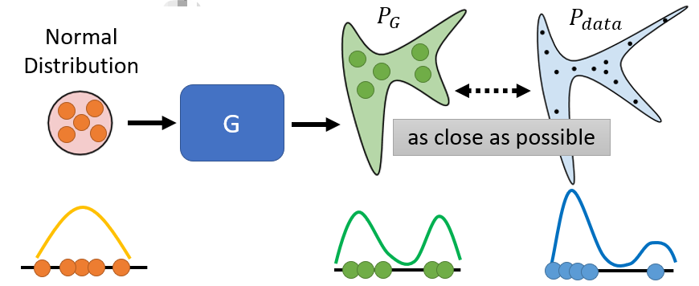
我们假设
- Generator 的 Input 是一个一维的向量
- Generator 的 Output 也是一维的向量
- 我们真正的 Data 也是一维的向量
那我们的 Normal Distribution 就长这个样子
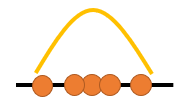
那丢到 Generator 以后，假设你输入 5 个点，那边这每一个点，它的位置会改变，那你就产生一个新的 Distribution，那可能本来大家都集中在中间，通过这个 Generator，通过一个 Network 里面很复杂，不知道做了什么事情以后，这些点就分成两边，所以你的 Distribution 就变成这个样子
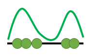
而 Pdata 是指真正的资料的分布，真正资料分布可能长这个样子
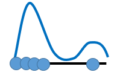
它分两面的状况是更极端的，左边的东西比较多，右边的东西比较少，那你期待左边这个分布跟右边这个分布，越接近越好，如果写成式子的话
你可以写成这个样子
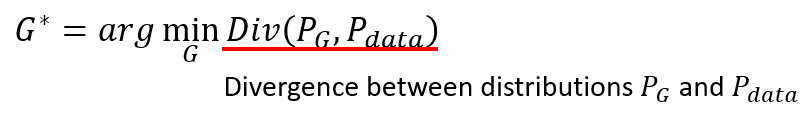
Div Of PG 跟 Pdata，它指的意思就是 PG 跟 Pdata，这两个 Distribution 之间的 Divergence(散度)
Divergence 这边指的意思就是，这两个你可以想成是，这两个 Distribution 之间的某种距离
- 如果这个 Divergence 越大，就代表这两个 Distribution 越不像
- Divergence 越小，就代表这两个 Distribution 越相近
Divergence 这就是衡量两个的 Distribution 相似度的一个 Measure
我们现在的目标，是要去找一个 Generator，找一个 Generator找个操作，实际上做的事情是找一个 Generator 里面的参数， Generator 也是一个 Network，里面有一大堆的 Weight 跟 Bias，它可以让我们产生出来的 PG 跟 Pdata 之间的 Divergence 越小越好，我要找的就是这样子的 Generator
这边把它写作 \(G^*\)，所以我们这边要做的事情，跟一般 Train Network 其实非常地像，我们第一堂课就告诉你说，我们定义了 Loss Function，找一组参数 Minimize Loss Function
在 Generation 这个问题里面，我们现在其实也定义了我们的 Loss Function，它就是 PG 跟 Pdata 的 Divergence，就是它们两个之间的距离，它们两个越近，那就代表这个产生出来的 PG 跟 Pdata 越像，所以 PG 跟 Pdata，我们希望它们越相像越好
但是我们这边遇到一个困难的问题
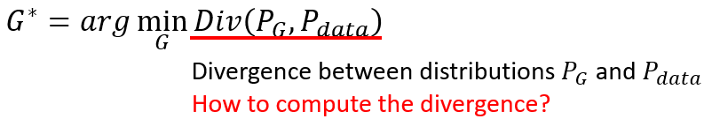
这个 Loss，我们是可以算的，但是这个 Divergence 是要怎么样算？那你可能知道一些 Divergence 的式子，比如说 KL Divergence，比如说 JS Divergence，这些 Divergence 用在这种 Continues 的 Distribution 上面，你要做一个很复杂的，在实作上你几乎不知道要怎么算的积分，那我们根本就无法把这个 Divergence 算出来
我们算不出这个 Divergence，我们又要如何去找一个 G 去 Minimize 这个 Divergence ，这个就是 GAN 所遇到的问题，这就是我们在 Train 这一种，Generator 的时候会遇到的问题
而 ** GAN 是一个很神奇的做法，它 可以突破，我们不知道怎么计算 Divergence 的限制 **
Sampling is good enough ……¶
所以我现在遇到的问题就是，不知道怎么计算 Divergence，而 GAN 告诉我们就是，你不需要知道 PG 跟 Pdata它们实际上的 Formulation 长什么样子，只要能从 PG 和 Pdata这两个 Distributions Sample 东西出来，就有办法算 Divergence
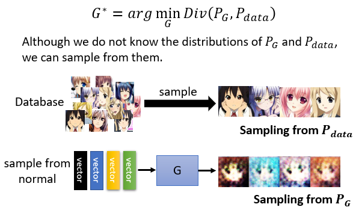
怎么从真正的 Data 里面 Sample 出东西来，怎么从 Generator 里面 产生一些东西出来？
-
把你的图库拿出来，从图库里面随机产生，随机 Sample 一些图片出来，你就得到 Pdata
-
那你就把你的 Generator，输入这个从 Normal Distribution Sample 出来的 Vector，丢到 Generator 里面（我们刚才说过，你这边的拿来 Sample 那个 Distribution，要是你有办法 Sample 的，所以我们选 Normal Distribution 式子我们是知道的，是有办法 Sample 的) 我们从 Normal Distribution 里面 Sample 一堆 Vector 出来丢给 Generator，让 Generator 产生一堆图片出来，那这些图片就是从 PG Sample 出来的结果
所以我们有办法从 PG 做 Sample，我们有办法从 Pdata 做 Sample
Discriminator¶
接下来，GAN 这一整个系列的 Work，就是要告诉你说，怎么在只有做 Sample 的前提之下，我根本不知道 PG 跟 Pdata 实际上完整的 Formulation 长什么样子，居然就估测出了 Divergence
那这个就是要靠 Discriminator 的力量
那我们刚才讲过说 Discriminator是怎么训练出来的
- 我们有一大堆的 Real Data，这个 Real Data 就是从 Pdata Sample 出来的结果
- 我们有一大堆 Generative 的 Data，Generative 的 Data，就可以看作是从 PG Sample 出来的结果
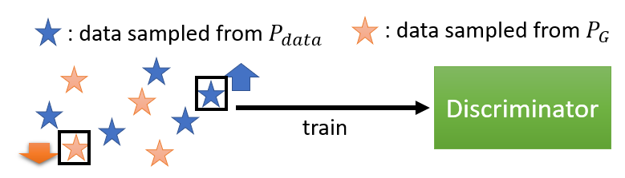
根据 Real 的 Data 跟 Generative 的 Data，我会去训练一个 Discriminator，它的训练的目标是
- 看到 Real Data，就给它比较高的分数
- 看到这个 Generative 的 Data，就给它比较低的分数
Discriminator 训练的目标，就是要分辨好的图跟不好的图，分辨真的图跟生成的图，所以看到真的图给它高分，看到生成的图给它低分
实际以上的过程，你也可以把它写成式子，把它当做是一个 Optimization 的问题，这个 Optimization 的问题是这样子的
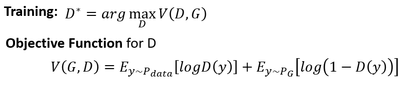
我们要训练一个 Discriminator，这个 Discriminator 可以去 Maximize某一个 Function，我们这边叫做 Objective Function（我们要 Maximize 的东西，我们会叫 Objective Function，如果 Minimize 我们就叫它 Loss Function）
我们现在要找一个 D，它可以 Maximize 这个 Objective Function，这个 Objective Function 长这个样子
-
\(E_{y\sim P_{data}}[logD(y)]\) 我们有一堆 Y，它是从 Pdata 里面 Sample 出来的，也就是它们是真正的 Image，而我们把这个真正的 Image 丢到 D 里面，得到一个分数再取\(logD(y)\)
-
\(E_{y\sim P_G}[log(1-D(y))]\) 那另外一方面，我们有一堆 Y，它是从 PG 从 Generato r 所产生出来的，把这些图片也丢到 Discriminator 里面，得到一个分数，再取 \(log(1 - D (y))\)
我们希望这个Objective Function V越大越好
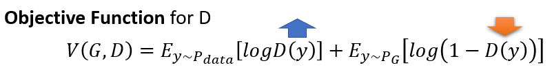
- 意味着我们希望这边的 D (Y) 越大越好，我们希望 Y 如果是从Pdata Sample 出来的，它就要越大越好
- 我们希望说如果 Y 是从这个PG Sample 出来的，它就要越小越好
让 D (Y) 越大越好，也就是让Discriminator Output 的值越小越好
你可能觉得没事突然写出这个式子有点奇怪，但你不一定要把这个 Objective Function 写成这个样子，它完全可以有其他的写法，那最早年之所以写成这个样子，是有一个很明确的理由，是为了要把Discriminator 跟 Binary Classification，跟二元的分类扯上关系
事实上这个 Objective Function，它就是Cross Entropy 乘一个负号，我们知道我们在训练一个 Classifier 的时候，我们就是要 Minimize Cross Entropy，所以当我们Maximize Cross Entropy 乘一个负号的时候，其实等同于Minimize Cross Entropy，也就是等同于是在训练一个 Classifier
那这个 Discriminator，其实可以当做是一个 Classifier，它做的事情就是把蓝色这些点，从 Pdata Sample 出来的真实的 Image，当作 Class 1，把从 PG Sample出来的这些假的 Image，当作 Class 2
有两个 Class 的 Data，训练一个 Binary 的 Classifier，训练完就等同于是，解了这一个 Optimization 的问题
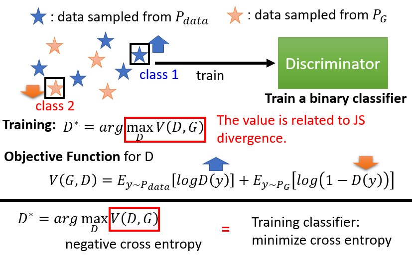
那这边最神奇的地方是这一个式子，这个红框框里面的数值，它跟 JS Divergence 有关
那事实上有趣的事情是，我觉得最原始的 GAN 的 Paper，它的发想可能真的是从 Binary Classifier 来的，一开始是把 Discriminator，写成 Binary 的 Classifier，然后有了这样的 Objective Function，然后再经过一番推导以后，这个 Objective Function，它的 Maximum，就是你找到一个 D，可以让这个 Objective Function，它的值最大的时候，这个最大的值跟 JS Divergence 是有关的。它们没有完全一模一样，所以显然一开始，并不是针对 JS Divergence 设计的，而是经过一番推导以后，发现它们是非常有关联的，那至于实际上的推导过程，你可以参见原始 Ian J. Goodfellow 写的文章，那其实里面的推导过程，我觉得写得算是蛮清楚的
所以真正神奇的地方就是，这一个Objective Function 的最大值，它跟 Divergence 是有关的，所以我们刚才说，我们不知道怎么算 Divergence没关系，Train 你的 Discriminator，Train 完以后，看看它的 Objective Function 可以到多大，那个值就跟 Divergence 有关
这边我们并没有把证明拿出来跟大家讲了，但是我们还是可以从直观上来理解一下，为什么这个Objective Function 的值，会跟 Divergence 有关
你可以想想看，假设 PG 跟 Pdata，它的Divergence 很小
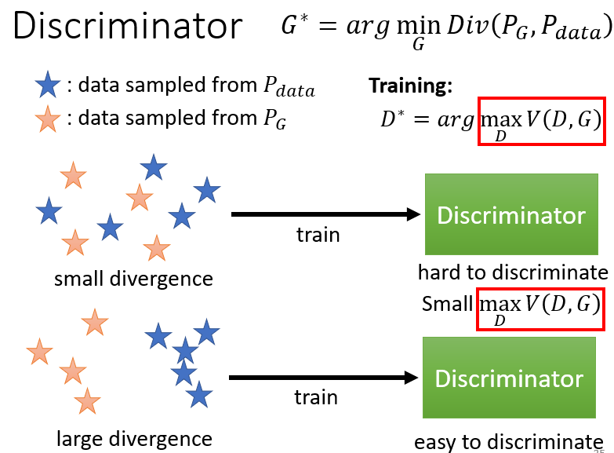
-
也就 PG 跟 Pdata 很像，它们差距没有很大，它们很像，PG 跟 Pdata Sample 出来的，蓝色的星星跟红色的星星，它们是混在一起的
这个时候Discriminator 就是在 Train 一个，Binary 的 Classifier，对 Discriminator 来说，既然这两堆资料是混在一起的，那就很难分开，这个问题很难，所以你在解这个 Optimization Problem 的时候，你就没有办法让这个 Objective 的值非常地大
所以这个 Objective 这个 V 的，Maximum 的值就比较小，所以小的 Divergence，对应到小的这个 Objective Function 的Maximum 的值
所以不是 Objective Function 的值本身，是 Objective Function 在穷举地找 Discriminator 要可以得到的最大的值，
-
如果今天，你的两组 Data 很不像，它们的 Divergence 很大，那对 Discriminator 而言，就可以轻易地把它分开
当 Discriminator 可以轻易把它分开的时候，这个 Objective Function 就可以冲得很大，那所以当你有大的 Divergence 的时候，这个 Objective Function 的 Maximum 的值，就可以很大
详细的证明请参见 GAN 原始的 Paper，里面在做了一些假设，比如说 Discriminator 的 Capacity 是无穷大，等等的假设以后，可以做出这个 Maximum 的值，跟 JS Divergence 一些相关的这个推导
所以我们说我们本来的目标是要找一个 Generator，去 Minimize PG 跟 Pdata 的 Divergence
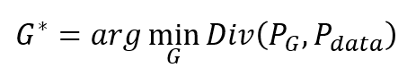
但我们卡在不知道怎么计算 Divergence，那我们现在要知道，我们只要训练一个 Discriminator，训练完以后，这个 Objective Function 的最大值，就是这个 Divergence，就跟这个 Divergence 有关
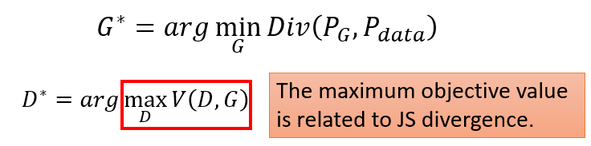
那我们何不就把红框框里面这一项，跟 Divergence 做替换，我们何不就把 Divergence，替换成红框框里面这一项，所以我们就有了这样一个 Objective Function
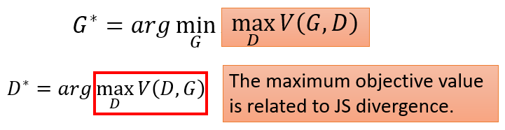
这个 Objective Function 乍看之下有点复杂，它有一个 Minimum，又有一个 Maximum，所以你不小心就会脑筋转不过来
- 我们是要找一个 Generator，去 Minimize 红色框框里面这件事
- 但是红框框里面这件事，又是另外一个 Optimization Problem，它是在给定 Generator 的情况下，去找一个 Discriminator，这个 Discriminator，可以让 V 这个 Objective Function 越大越好
然后我们要找一个 G，让红框框里面的值最小，这个 G 就是我们要的 Generator，而刚才我们讲的这个 Generator 跟 Discriminator，互动 互相欺骗这个过程，其实就是想解这一个有 Minimize，又有 Maximize 这个 Min Max，Min Max 的问题，就是透过下面这一个，我们刚才讲的 GAN 的 Argument 来解的
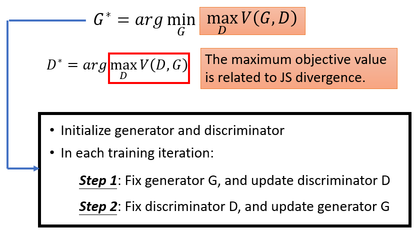
那至于实际上，为什么下面这个 Argument 可以解这个问题，你也可以参见原始 GAN 的 Paper
那讲到这边，也许你就会问说，为什么是 JS Divergence，而且还不是真的 JS Divergence，是跟 JS Divergence 相关而已，怎么不用真正的 JS Divergence，或不用别的，比如说 KL Divergence
你完全可以这么做，你只要改了那个 Objective Function，你就可以量各式各样的 Divergence，那至于怎么样设计 Objective Function，得到不同的 Divergence，那有一篇叫做 F GAN 的 Paper 里面，有非常详细的证明
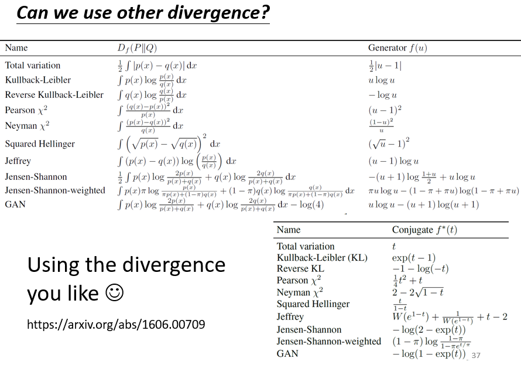
它有很多的 Table 告诉你说，不同的 Divergence，要怎么设计它的 Objective Function，你设计什么样的 Objective Function，去找它的 Maximum Value，就会变成什么样的 Divergence，在这篇文章里https://arxiv.org/abs/1606.00709面都有详细的记载，这一开始有人会觉得说，GAN 之所以没有很好 Train，也许是因为，就是我们没有在真的，这个 Minimize JS Divergence
但是有了这个 F GAN 这个 Paper以后，它就告诉你说，我们有办法 Minimize JS Divergence，但就算你真的可以 Minimize JS Divergence，结果也还是没有很好，GAN 还是没有很好 Train
所以俗话就说，No Pain No Gan
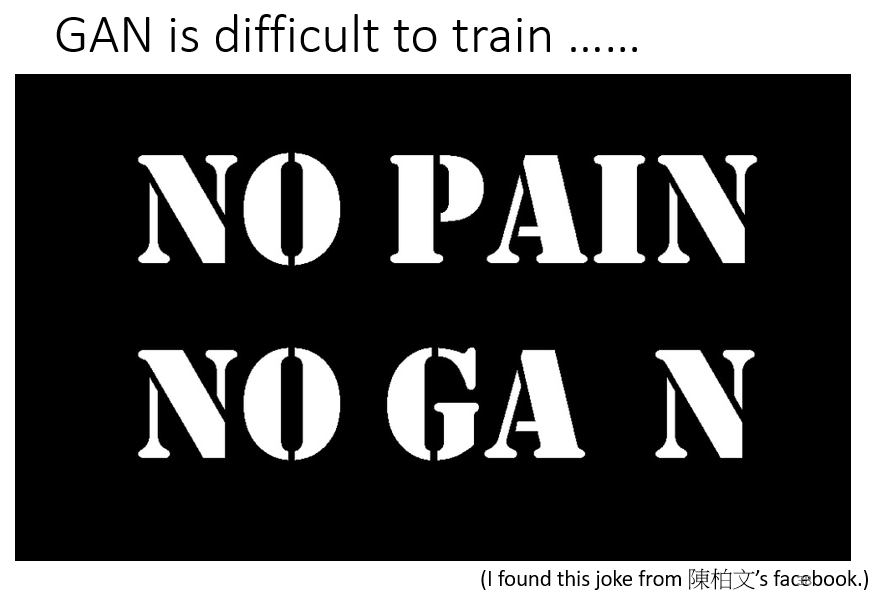
所以接下来我们就要讲一些，GAN 训练的小技巧
Tips for GAN¶
其实它 GAN 训练的小技巧非常非常多，我们只挑一个最知名的来讲，这个最知名的就是很多人都听过，就是很多人都听过的 WGAN
在讲 WGAN 之前，我们先讲 JS Divergence 有什么样的问题，在最早的 GAN 说，我们要 Minimize 的是 JS Divergence，那选择 JS Divergence 的时候，会有什么问题
JS divergence is not suitable¶
在想 JS Divergence 的问题之前，我们先看一下 PG 跟 Pdata 有什么样的特性
那 PG 跟 Pdata 有一个非常关键的特性是，PG 跟 Pdata 它们重叠的部分往往非常少
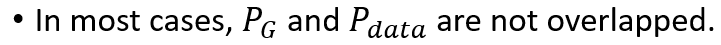
这边有两个理由
-
第一个理由是来自于 Data 本身的特性
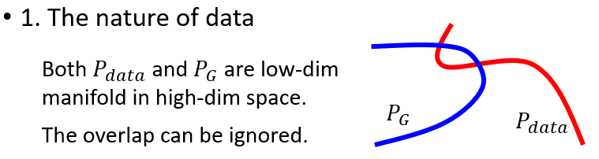
PG 跟 Pdata，它们都是要产生图片的，那图片其实是高维空间里面的一个低维的 Manifold(流形（英语：Manifolds）是可以局部欧几里得空间化的一个拓扑空间，是欧几里得空间中的曲线、曲面等概念的推广)，怎么知道图片是高维空间里面低维的 Manifold 呢？
我们可以想想看，你在高维空间里面，随便 Sample 一个点，它通常都没有办法构成一个，二次元人物的头像，所以二次元人物的头像的分布在高维的空间中其实是非常狭窄的，所以二次元头像的分布，这个图片的分布，其实是高维空间中的低维的 Manifold
或者是如果是以二维空间来想的话，那图片的分布，可能就是二维空间的一条线，二维空间中多数的点都不是图片，就高维空间中随便 Sample 一个点，都不是图片，只有非常小的范围 Sample 出来它会是图片，所以从这个角度来看，从资料本身的特性来看，PG 跟 Pdata，它们都是 Low Dimensional 的 Manifold，用二维空间来讲，PG 跟 Pdata 都是二维空间中的两条直线，而二维空间中的两条直线，除非它刚好重合，不然它们相交的范围，几乎是可以忽略的，这是第一个理由，那也许有人说， 也许图片根本就不是什么Low Dimensional 的 Manifold，那会不会第一个理由就不成立了
-
第二个理由是，我们是从来都不知道 PG 跟 Pdata 长什么样子，我们对 PG 跟 Pdata，它的分布的理解，其实来自于 Sample
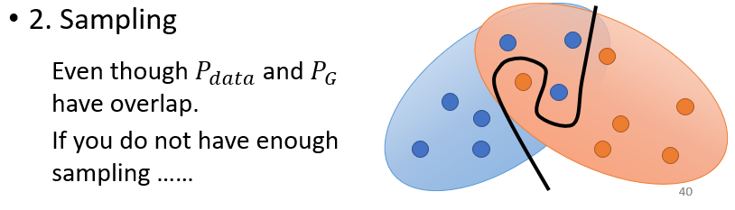
所以也许 PG 跟 Pdata，它们是有非常大的 Overlap 的范围，但是我们实际上，在了解这个 PG 跟 Pdata，在计算它们的 Divergence 的时候，我们是从 Pdata 里面 Sample 一些点出来，从 PG 里面 Sample 一些点出来
如果你 Sample 的点不够多，你 Sample 的点不够密，那就算是这两个 Divergence 实际上，这两个 Distribution 实际上有重叠，但是假设你 Sample 的点不够多，对 Discriminator 来说，它也是没有重叠的
就是这个蓝色的分布跟红色的分布，明明是有重叠的，但如果你从蓝色分布 Sample 一些点，红色分布 Sample 一些点，这些点你又 Sample 得不够多，你完全就可以画一条楚河汉界，把红色的点跟蓝色的点完全地分开来，然后说红色的点，它的分布就是在这个楚河汉界的右边，蓝色的点就在左边，它们完全是没有任何冲突
所以以上给你两个理由，试图说服你说 PG 跟 Pdata 这两个分布，它们重叠的范围是非常小的
而几乎没有重叠这件事情，对于 JS Divergence 会造成什么问题？
JS Divergence 有个特性，是两个没有重叠的分布，JS Divergence 算出来，就永远都是 Log2，不管这两个分布长什么样，所以两个分布只要没有重叠，算出来就一定是 Log2
所以举例来说
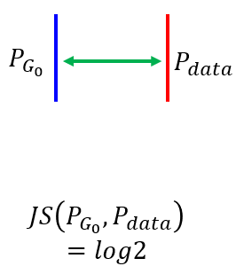
假设这是你的 Pdata，这是你的 PG，它们都，假设它们都是一条直线，然后中间有很长的距离，你算它们的 JS Divergence，是 Log2
假设你的 PG 跟 Pdata 其实蛮接近的
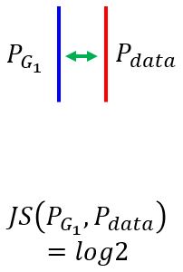
那中间的间隔其实是比较小的，算出来结果还是 Log2
除非你的 PG 跟 Pdata 有重合
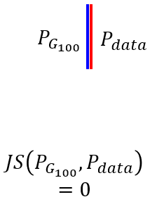
不然这个 PG 跟 Pdata 只要它们是两条直线，它们这两条直线没有相交，那算出来就是 Log2，算出来这个 Case，算出来是 Log2，这个 Case 算出来也是 Log2
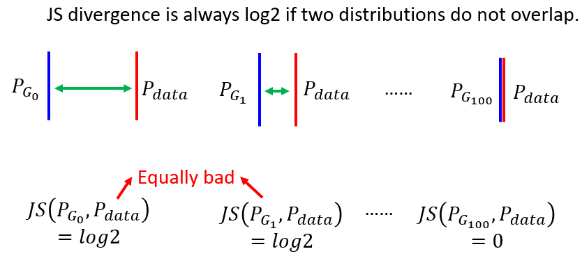
那但是明明中间这个 Case，中间这个 Generator就比左边这个 Generator 好，明明蓝色的线就跟红色的线比较近，但是从 JS Divergence 上面，看不出这样子的现象
那既然从 JS Divergence 上，看不出这样的现象，你在 Training 的时候，你根本就没有办法把这样子的 Generator，Update 参数变成这样子的 Generator，因为对你的 Loss 来说，对你的目标来说，这两个 Generator 是一样好或者是一样糟
那以上是从比较理论的方向来说明，如果我们从更直观的实际操作的角度来说明，你会发现，当你是用 JS Divergence 的时候，你就假设你今天在 Train 一个，Binary 的 Classifier，去分辨 Real 的 Image 跟 Generated Image，你会发现实际上你通常 Train 完以后，正确率几乎都是 100%
因为你 Sample 的图片根本就没几张，对你的 Discriminator 来说，你 Sample 256 张 Real 的图片，256 张 Fake 的图片，它直接用硬背的，都可以把这两组图片分开，知道说谁是 Real 谁是 Fake，所以实际上，如果你有自己 Train 过 GAN 的话你会发现，如果你用 Binary 的 Classifier Train 下去，你会发现，你几乎每次 Train 完你的 Classifier 以后，也就你 Train 完你的 Discriminator 以后，正确率都是 100%
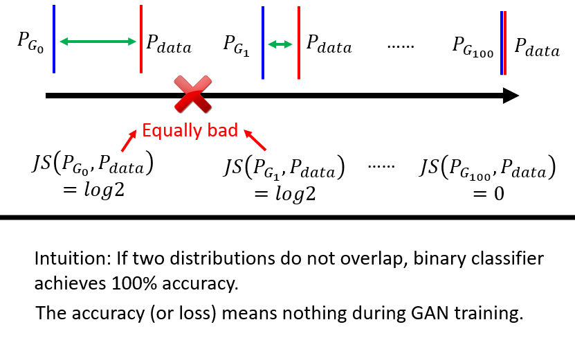
我们本来会期待说，这个 Discriminator 的 Loss，也许代表了某些事情，这个 Binary Classifier Loss，也许代表某些事情，这个 Loss 越来越大，代表问题越来越难，代表我们的 Generated Data，跟 Real 的 Data 越来越接近
但实际上，你在实际操作的时候你根本观察不到这个现象，这个 Binary Classifier 训练完的 Loss 根本没有什么意义，因为它总是可以让它的正确率变到 100%，两组 Image 都是 Sample 出来的，它硬背都可以得到 100% 的正确率，你根本就没有办法看出你的 Generator，有没有越来越好
所以过去，尤其是在还没有 WGAN 这样的技术，在我们还用 Binary Classifier，当作 Discriminator 的时候，Train GAN 真的就很像巫术黑魔法，你根本就不知道你 Train 的时候，有没有越来越好，所以怎么办，那时候做法就是，你每次 Update 几次 Generator 以后，你就要把你的图片 Print 出来看，然后你就要一边那个吃饭，一边看那个图片生成的结果，然后跑一跑就发现 哇 坏掉了，然后咔掉重做这样子
所以以前你根本就没有，不像我们在 Train 一般的 Network 的时候，你有个 Loss Function，然后那个 Loss 随着训练的过程，会慢慢慢慢变小，那你就会看说 Loss 慢慢变小，你就放心知道说你的 Network 有在 Train，但会不会 Overfitting 是另外一件事，至少还在它在 Training Data 上有越来越好
但是对 GAN 而言，本来我们期待 Classifier 的 Loss，可以提供一些资讯，但是当你的 Classifier 是一个，简单 一般的 Binary Classifier 的时候，它训练的结果你就没有任何资讯，你每次训练出来正确率都是 100%，你根本不知道你的 Generator，有没有越来越好，变成你只能够用人眼看，用人眼守在电脑前面看，发现结果不好 咔掉，重新用一组 Hyperparameter，重新调一下 Network，加工重做，所以过去训练 GAN 是有点辛苦的
那既然是 JS Divergence 的问题，于是有人就想说，那会不会换一个衡量两个 Distribution 的相似程度的方式，换一种 Divergence，就可以解决这个问题了，于是就有了这个 Wasserstein，或使用 Wasserstein Distance 的想法
Wasserstein Distance¶
Wasserstein Distance 的想法是这个样子，假设你有两个 Distribution，一个 Distribution 我们叫它 P，另外一个 Distribution 我们叫它 Q
Wasserstein Distance 它计算的方法，就是想象你在开一台推土机
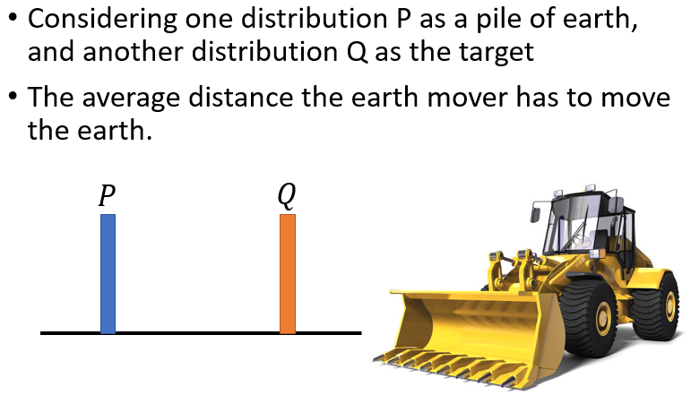
推土机的英文叫做 Earth Mover，想象你在开一台推土机，那你把 P 想成是一堆土，把 Q 想成是你要把土堆放的目的地，那这个推土机把 P 这边的土，挪到 Q 所移动的平均距离，就是 Wasserstein Distance
在这个例子里面，我们假设 P 都集中在这个点，Q 都集中在这个点，对推土机而言，假设它要把 P 这边的土挪到 Q 这边，那它要平均走的距离，就是 D
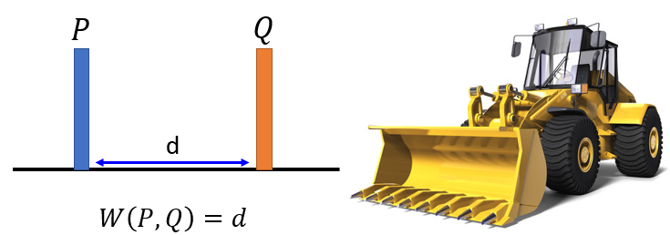
所以在这个例子里面，假设 P 集中在一个点，Q 集中在一个点，这两个点之间的距离是 D 的话，那 P 跟 Q 的 Wasserstein Distance，就是 D
那因为在讲这个，Wasserstein Distance 的时候，你要想象有一个 Earth Mover，有一个推土机在推土，所以其实 Wasserstein Distance，又叫 Earth Mover Distance
但是如果是更复杂的 Distribution，你要算 Wasserstein Distance，就有点困难了
假设这是你的 P，假设这是你的 Q
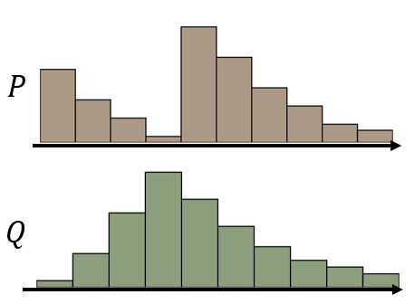
假设你开了一个推土机，想要把 P 把它重新塑造一下形状，让 P 的形状跟 Q 比较接近一点，那有什么样的做法呢，你会发现说，你可能的 Moving Plans，把 P 重新塑造成 Q 的方法有无穷多种
你可以说我把这边的土搬到这里来，我把这边的土搬到这里来，把 P 变成 Q
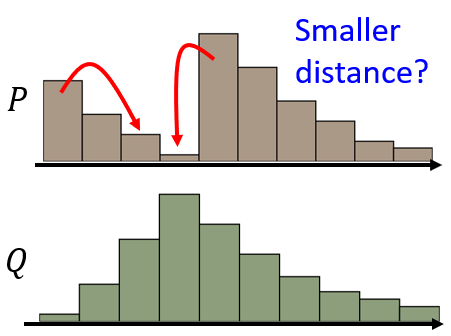
但你也可以舍近求远说，我把这里的土搬到这里来，把这里的土搬到这里来，舍近求远，一样还是可以把 P 变成 Q
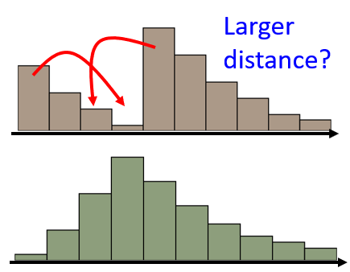
所以当我们考虑，比较复杂的 Distribution 的时候，把 Q 把 P 变成 Q 的方法，是有非常非常多不同的方法，你有各式各样不同的 Moiving Plan，用不同的 Moving Plan，你推土机平均走的距离就不一样
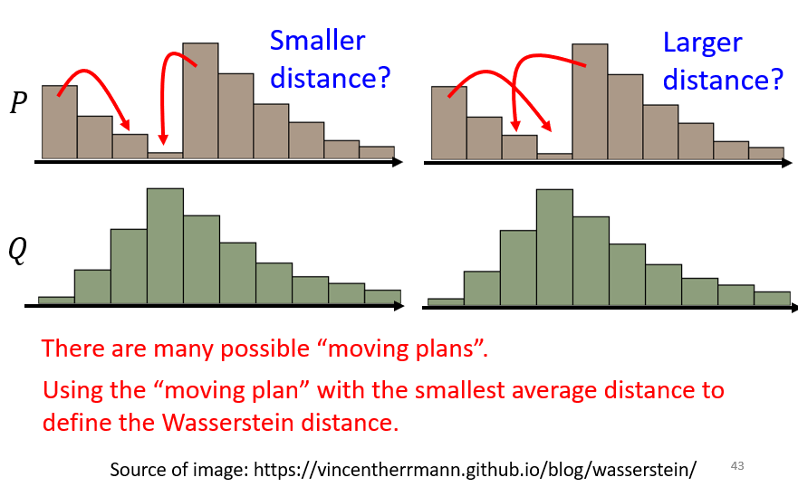
在左边这个例子里面，推土机平均走的距离比较少，在右边这个例子里面因为舍近求远，推土机平均走的距离比较大
为了让 Wasserstein Distance 只有一个值，所以这边 Wasserstein Distance 的定义是，穷举所有的 Moving Plans，然后看哪一个推土的方法，哪一个 Moving 的计划，可以让平均的距离最小，那个最小的值，才是 Wasserstein Distance
所以其实要计算 Wasserstein Distance，是挺麻烦的，光只是要计算一个 Distance，居然还要解一个 Optimization 的问题，解出这个 Optimization 的问题，才能算 Wasserstein Distance
我们先不讲，怎么计算 Wasserstein Distance 这件事，我们先来讲假设我们能够计算 Wasserstein Distance 的话，它可以带给我们什么样的好处
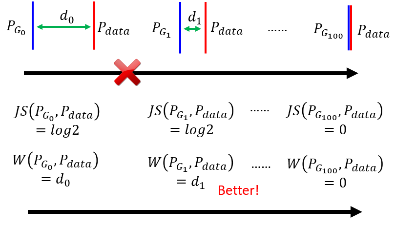
那假设 PG 跟 Pdata 它们的距离是 \(d_0\)，在左边这个例子里面，Wasserstein Distance 算出来就是 \(d_0\)
在中间这个例子里面，PG 跟 Pdata 它们之间的距离是 \(d_1\)，那 Wasserstein Distance 算出来的距离，就是 \(d_1\)
假设 \(d_1\) 比较小，\(d_0\) 比较大，那算 Wasserstein Distance 的时候，这个 Case 的 Wasserstein Distance 就比较小，这个 Case 的 Wasserstein Distance 就比较大，所以我们就可以知道说，由左向右的时候，Wasserstein Distance 是越来越小的
所以如果你观察，Wasserstein Distance 的话会知道说，从左到右我们的 Generator 越来越进步，但是如果你观察 Discriminator，你会发现你观察不到任何东西，对 Discriminator 而言，这边每一个 Case 算出来的 JS Divergence，都是一样，都是一样好或一样差，但是如果换成 Wasserstein Distance，由左向右的时候我们会知道说，我们的 Discriminator 做，我们的 Generator 做得越来越好
所以我们换一个计算 Divergence 的方式，我们就可以解决 JS Divergence，有可能带来的问题
这又让我想到一个演化的例子，这是眼睛的生成
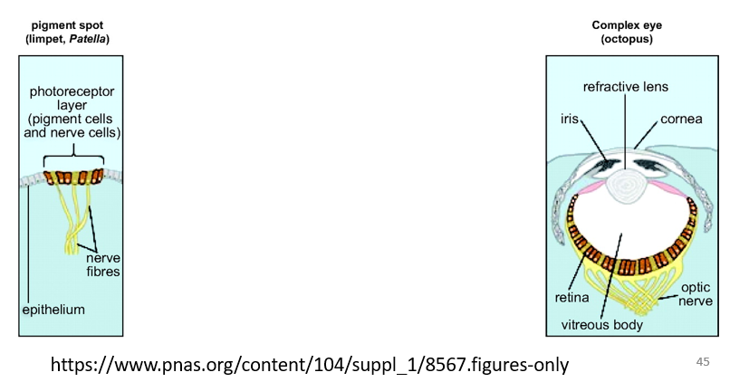
右边这个是人类的眼睛，人类的眼睛是非常地复杂的，那有一些生物它有非常原始的眼睛，比如说有一些细胞具备有感光的能力，这可以看做是最原始的眼睛，但是这些最原始的眼睛，怎么变成最复杂的眼睛，这对人类来说其实觉得非常难想象
左边这个图像构造这么简单，只是一些感光的细胞在皮肤上，经过突变产生一些感光的细胞，听起来像是一个合理的，但是天择突变，怎么可能产生这么复杂的器官，怎么产生眼睛这么精巧的器官
那如果你直接觉得说，从这个地方就可以一步跳到这个地方，那根本不可能发生，但是中间其实是有很多连续的步骤，从感光细胞到眼睛，中间其实是有连续的步骤的
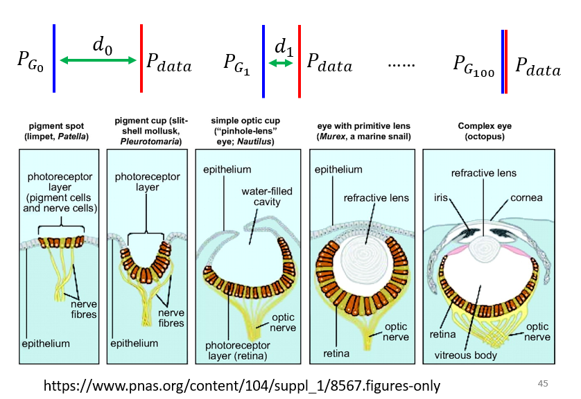
举例来说，感光的细胞可能会，出现在一个比较凹陷的地方，皮肤凹陷下去，这样感光细胞可以接受来自不同方向的光源，然后后来觉得说，干脆把凹陷的地方盖起来，后来觉得盖起来的地方里面，可以放一些液体，然后最后就变成了人的眼睛
而从最左边跳到最右边这一步，非常大，但是这边每一小步，都可以让一个生命存活的机率变大，都可以让生命繁衍下去的机率变高
既然这边每一个步骤，都可以让生命繁衍的机率变高，那生命就可以从左边一直演化到右边，最终产生复杂的器官
而我觉得对于当你使用 WGAN，当你使用这个 Wasserstein Distance，来衡量你的 Divergence 的时候，其实就制造了类似的效果，本来 PG0 跟 Pdata 非常地遥远，你要它一步从这里跑到这里，一步从这里跑到这里，让这个 PG0 跟 Pdata，直接 Align 在一起，是不可能的，可能非常地困难
对 JS Divergence 而言，它需要做到直接从这一步跳到这一步，它的 JS Divergence 的 Loss 才会有差异，但是对 W Distance 而言，你只要每次有稍微把 PG 往 Pdata 挪近一点，W Distance 就会有变化，W Distance 有变化，你才有办法 Train 你的 Generator，去 Minimize W Distance，所以这就是为什么，当我们从 JS Divergence，换成 Wasserstein Distance 的时候，可以带来的好处
WGAN¶
WGAN 实际上就是用，当你用 Wasserstein Distance，来取代 JS Divergence 的时候，这个 GAN 就叫做 WGAN
接下来你会遇到的问题就是，Wasserstein Distance 是要怎么算，Pdata 跟 PG，它的 Wasserstein Distance 要怎么计算，Wasserstein Distance，是一个非常复杂的东西，我光要算个 Wasserstein Distance，还要解一个 Optimization 的问题，实际上要怎么计算
那这边就不讲过程，直接告诉结果，解下面这个 Opimilazion 的 Problem，解出来以后你得到的值，就是 Wasserstein Distance
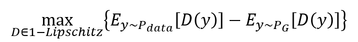
我们就观察一下这个式子，这个式子里面有说
- y 如果是从 Pdata 来的，那我们要计算它的 D(y) 的期望值
- y 如果是从 PG 来的，我们计算它的 D(y) 的期望值，但是前面乘上一个负号
所以如果你要 Maximum，这个 Objective Function，你会达成这样的效果，
- 如果 y是从 Pdata Sample 出来的，D(y)，就 Discriminator 的 Output 要越大越好
- 如果 X 是从 PG，从 Generator Sample 出来的，那 D(y)，也就 Discriminator 的 Output，应该要越小越好
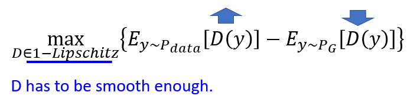
但是这边还有另外一个限制，它不是光大括号里面的值变大就好，还有一个限制是，D 不能够是一个随便的 Function，D必须要是一个 1-Lipschitz 的 Function
1-Lipschitz 是什么东西，如果你不知道是什么的话，也没有关系
我们这边你就想成，D 必须要是一个足够平滑的 Function，它不可以是变动很剧烈的 Function，它必须要是一个足够平滑的 Function
那为什么足够平滑这件事情是非常重要的，我们可以从直观来理解它，假设这个是真正的资料的分布，这是 Generated 的资料的分布
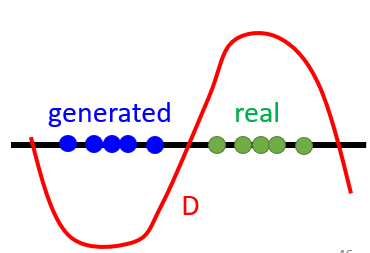
如果我们没有这个限制，只看大括号里面的值的话，大括号里面的目标，是要这些真正的值，它的 D(y) 越大越好，那要让 Generated 的值，它的 D(y) 越小越好
如果你没有做任何限制，只单纯要这边的值越大越好，这边的值越小越好，在蓝色的点跟绿色的点，也就是真正的 Image，跟 Generated 的 Image，没有任何重叠的情况下，你的 Discriminator 会做什么，它会给 Real 的 Image 无限大的正值，给 Generated 的 Image 无限大的负值
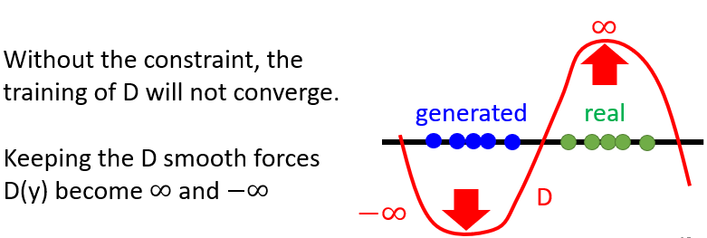
所以你这个 Training 根本就没有办法收敛，而且你会发现说，只要这两堆 Data 没有重叠，你算出来的值都是无限大，你算出来的这个 Maximum 值都是无限大，这显然不是我们要的，这不就跟 JS Divergence 的问题一模一样吗
其实你要加上这个限制以后，你这个 Maximum 的值，才会是 Wasserstein Distance，才是做 WGAN
为什么加上这个限制，就可以解决刚才的问题？
因为这个限制是要求 Discriminator，不可以太变化剧烈，它必须要够听话，那今天如果你，要求你的 Discriminator 够平滑的时候，假设 Real Data 跟 Generated Data，它们距离比较近，那你就没有办法让 Real 的 Data 值非常大，然后 Generated 的值非常小，因为如果你让 Real 的值非常大，Generated 的值非常小，它们中间的差距很大，那这一个 Discriminator 变化就很剧烈，它就不平滑了，它就不是 1-Lipschitz
那为了要是 1-Lipschitz，这边的值没办法很大，这边的值没办法很小，让 Discrimination 必须足够，只觉得发现说，如果 Real 跟 generated 的 Data 差距离很远，那它们的值就可以差很多，这边算出来的值就会比较大，你的 Wasserstein Distance 就比较大
如果 Real 跟 Generated 很近，就算它们没有重合，因为有了这一个限制，有了这一个写在 Max 下面的，1-Lipschitz Function 的限制，那你就发现说，它们其实不会真的都跑到无限大，它们的距离，因为有 1-Lipschitz Function 的限制，所以 Real Data 的值跟 Generated Data 的值，就没有办法差很多，那你算出来的 Wasserstein Distance，就会比较小
接下来的问题就是，怎么做到这个限制
怎么确保 Discriminator，一定符合 1-Lipschitz Function 的限制，最早刚提出 WGAN 的时候，其实没有什么好想法，只知道写出了这个式子，那要怎么真的解这个式子，有点困难，所以最早的一篇 WGAN 的 Paper，最早使用 Wasserstein 的那一篇 Paper，它说了它做了一个比较粗糙的处理的方法
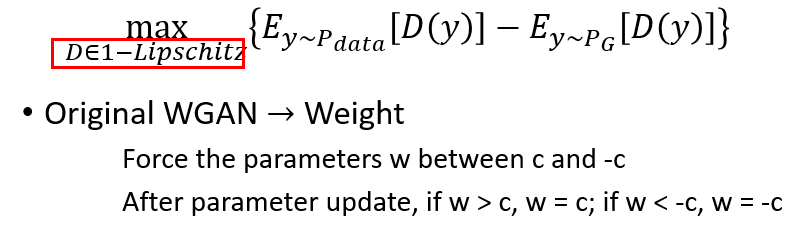
它是说我就 Train Network，那 Train Network 的时候，如果我 Training 的那个参数，我就要求它放得在 C 跟 -C 之间，如果超过 C，用 Gradient Descent Update 以后超过 C，就设为 C，Gradient Descent Update 以后小于 -C，就直接设为 -C
其实这个方法，并不一定真的能够让 Discriminator，变成 1-Lipschitz Function，那你可以想象说这个方法，也许真的可以让我们的 Discriminator，比较平滑，但它并没有真的去解这个，Optimization 的 Problem，它并没有真的让 Discriminator，符合这个限制
所以接下来就有其它的想法，有一个想法叫做 Gradient Penalty
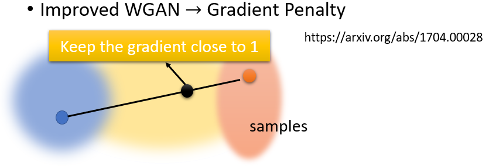
Gradient Penalty 是出自 Improved WGAN 这篇 Paperhttps://arxiv.org/abs/1704.00028，那 Improve WGAN 这篇 paper 是说
假设这个是你的 Real Data 的分布，这个是你的这个 Fake Data 的分布，那我在 Real Data 这边取一个 Sample，Fake Data 这边取一个 Sample，两点连线中间再取一个 Sample，我要求这个点它的 Gradient 要接近，那你可能觉得说这个，不知道在说些什么这样，这件事情的关系，跟这个限制的关系，到底是什么，那就详见 Improved WGAN 的 Paper
那其实我觉得你现在，也不一定要真的非常较真说，这件事情 Gradient Penalty，跟这个限制之间的关系，因为其实有更多其它的方法，真的可以去解这个问题
那其实后来 Improved WGAN 之后，还有什么 Improved 的 Improved WGAN，真的有这篇 Paper，它就是把这个限制再稍微改一改
有另外一篇 Paper 就叫，Improved The Improved WGAN，那今天其实你有一个方法，真的把 D 限制，让它是 1-Lipschitz Function，这个叫做 Spectral Normalization
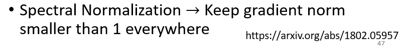
那我就把它的论文https://arxiv.org/abs/1802.05957放在这边给大家参考，那如果你要 Train 真的非常好的 GAN，你可能会需要用到 Spectral Normalizaion
本文总阅读量次